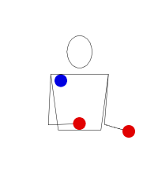
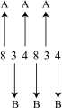
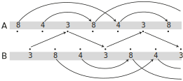
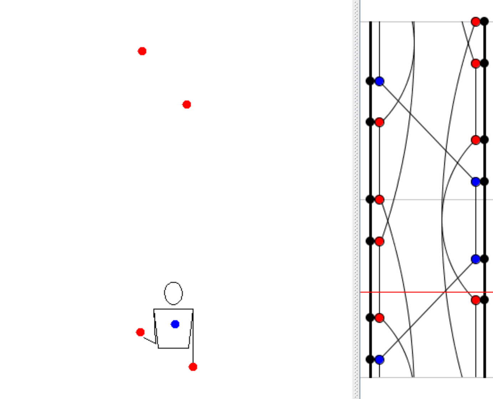

Jonglieren macht Spaß. Jonglieren mit Zahlen noch viel mehr. Die Siteswap-Notation, welche weit verbreitet unter Jongleuren ist, beschreibt Jongliermuster als eine Zahlensequenz. In dieser Notation repräsentieren Zahlen das Zeitintervall, angegeben in Takten. Sequenzen begegnen uns tagtäglich. So kommt es, dass z.B. das Datum des 23. Aprils (englisch: April 23rd oder auch 4 23) jonglierbar ist. Jongliert sieht es wie folgt aus:

Aber wenn wir nun nicht allein Jonglieren wollen? Können wir dieses Muster in ein Passing-Muster transformieren? Und ob! Jedoch wollen wir das Ursprungsmuster, welches mit 3 Gegenständen geworfen werden nicht zwischen 2 Jongleuren aufteilen, sondern vielmehr das 423-Gefühl beibehalten und dieses mit Passing kombinieren. Hierfür behalten wir die 4 und die 2 für jeden Jongleur bei und betrachten die 3 als so genannten globalen Wurf. Die 3 wird zwischen den beiden Jongleuren „aufgeteilt“, sprich bei zwei Jongleuren durch zwei geteilt. Jongleur \(A\) wirft damit die Sequenz 4 2 1.5, wobei alle 1.5 Würfe cross-Würfe sind.
Ein 1.5-Wurf mag nun verwirrend klingen, ist aber gar nicht so schwierig. Wenn wir allein Jonglieren geben die Zahlen die Anzahl der Takte an, die für uns vergehen, bis der Ball wieder landet. Bei Passing-Siteswaps unterscheiden wir zwischen lokalen und globalen würden. Lokale Siteswaps sind wie die Siteswaps für die Einzeljonlage zu betrachten. In einem Passing-Muster werfen nun aber auch die anderen Jongleure Gegenstände. Betrachten wir auch die Takte der anderen Passer, so sprechen wir von einem globalen Muster.
| Beats | ||||||
| 1 | 1.5 | 2 | 2.5 | 3 | 3.5 | |
| Juggler A | \(4\) | \(2\) | \(1.5_\times\) | |||
| Juggler B | \(1.5_{||}\) | \(4\) | \(2\) | |||
Eine lokale 4 wird so zu einem globalen 8 und eine lokale 2 zu einer globalen 4. Jongleur \(A\) würde also global betrachtet die Sequenz 843 werfen, was lokal zur Sequenz 4 2 1.5 wird. Schauen wir und das Leiterdiagramm an, wird dieses ein wenig klarer:
An 8-throw will land on \(A\) juggler's hand after 8 beats, when we take the actions of both jugglers into account. However, considering just the actions of juggler \(A\), the object will land after 4 beats as shown in the local sequence representation above. The mean of the pattern 834 equals 5, which will give us the number of objects needed for this pattern. Juggler \(A\) starts with 3 objects, while juggler B has 2. However, this pattern could also be juggled by just one person as shown in following animation:
Die 8 landet nach 8 Takten wieder in der Hand des gleichen Jongleurs. Betrachten wir die Aktionen von Jongleur \(A\) allein, so landet der Wurf nach 4 Takten. Für den Werfer „füllt“ sich dieser Wurf dann wie eine 4. Der Durchschnitt des globalen Musters 834 ergibt 5, welches die Anzahl der benötigten Gegenstände angibt. Jongleur \(A\) startet mit drei, und Jongleur B mit zwei Gegenständen.
Der Siteswap 834 lässt sich wiederum auch allein Jonglieren:
Die kleinste Zahl (die 3) ist hierbei äquivalent zu dem Pass-wurf in der Passing-Variante, während die geraden Würfe (4 und 8) Self-Würfe für Jongleur \(A\) und Jongleur \(B\). Die W-artige Form des ursprünglichen Musters bleibt erhalten.
Jeder valide Siteswap kann auf diese Weise in ein Passingmuster umgewandelt werden und dabei die Ursprungscharakteristik beibehalten. Dies kann dadurch erreicht werden, indem eine bestimmte Anzahl an Würfen auf die beteiligten Jongleure aufgeteilt wird. Das resultierende Muster kann zudem widerum als Wurfmuster für einen einzelnen Jongleur betrachtet werden, wobei die Anzahl der Objekte steigt, die Charakteristika jedoch erhalten bleiben.
Versucht doch einmal selber ein paar Muster zu transformieren! ;)